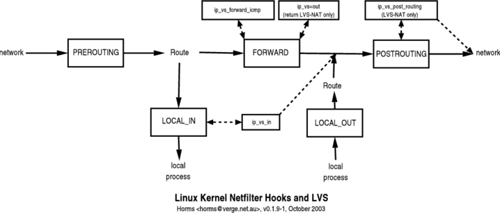
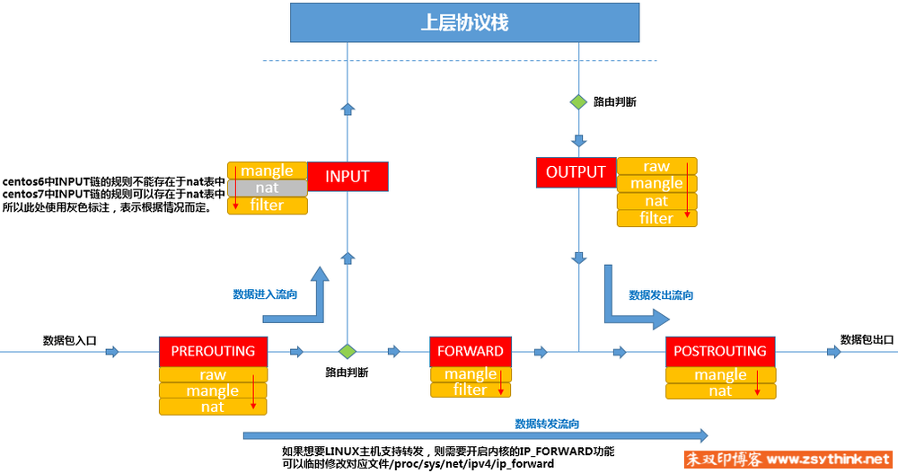

前言
内部有非 K8S 环境上需要类似 SVC 的负载实现，一开始是用 NGINX 做的，所有 SVC 域名都解析成一个 dummy IP ，然后 NGINX 根据 server_name 去 proxy 不同的 upstream 。 开始还是能用的，但是后面结果后面很多服务依赖 host 这个 header ，报错签名错误，而且毕竟这样是在用户态，效率不如内核态高。于是打算搞下之前的打算：把 IPVS 的 ClusterIP 的 SVC 扣到非 K8S 环境上使用。
kube-proxy 的 SVC 简单讲就是 node 上任何进程访问 SVC IP:SVC PORT 会被 dnat 成 endpoint ，是工作在内核态的四层负载，不会在机器上看到端口监听，而默认非集群的机器是无法访问 SVC IP 。在 K8S 里，endpoint 的 ip 无非就是 POD IP，host IP。前者就是 SVC 选中 POD ，后者例如 kubernetes 这个 SVC ，会 DNAT 成每个 kube-apiserver 的 host IP:6443 端口，也可能是 ExternalName 或者手动创建的 endpoint 。既然 kubernetes 这个 SVC 可以。那我的打算应该也是可以实现的。但是一开始实际按照思路试了下发现不行，网上的文章基本都是在单机 docker 或者现有的 K8S 环境上搞的，漏掉了很多精华和核心思想，这里记录下我的思路和实现过程。
环境信息
前面说的 SVC 现象是和 kube-proxy 的模式无关的。iptables 模式排查不直观，我更倾向于 IPVS 去搞，它更直观，而且支持更多的调度算法。管理 IPVS 规则的话我们需要安装 ipvsadm ，这里我是两台干净的 CentOS 7.8 来做环境。
| IP |
|---|
| 192.168.2.111 |
| 192.168.2.222 |
先安装下基础需要的：
yum install -y ipvsadm curl wget tcpdump ipset conntrack-tools
# 开启转发
sysctl -w net.ipv4.ip_forward=1
# 确认 iptables 规则清空
$ iptables -S
-P INPUT ACCEPT
-P FORWARD ACCEPT
-P OUTPUT ACCEPT
$ iptables -t nat -S
-P PREROUTING ACCEPT
-P INPUT ACCEPT
-P OUTPUT ACCEPT
-P POSTROUTING ACCEPT
过程
先思考下 kube-proxy 的 IPVS ，因为 SVC 端口和 POD 的端口不一样，所以 kube-proxy 使用的 nat 模式。暂且打算添加一个下面类似的 SVC ：
IP: 169.254.11.2
Port: https 80/TCP
TargetPort: 6443/TCP
Endpoints: 192.168.2.111:8080,192.168.2.222:8080
Session Affinity: None
准备工作
web 的话我是使用的 golang 的一个简单 web 二进制起的 ran :
wget https://github.com/m3ng9i/ran/releases/download/v0.1.6/ran_linux_amd64.zip
unzip -x ran_linux_amd64.zip
mkdir www
# 两个机器创建不同的 index 文件
echo 192.168.2.111 > www/test
echo 192.168.2.222 > www/test
./ran_linux_amd64 -port 8080 -listdir www
两个机器的这个 web 都起来后我们开个窗口去 192.168.2.111 上继续后面的操作。
lvs nat
kube-proxy 并没有像 lvs nat 那样有单独的机器做 NAT GW，或者认为每个 node 都是自己的 NAT GW。现在来添加 169.254.11.2:80 这个 SVC ，使用 ipvsadm 添加：
ipvsadm --add-service --tcp-service 169.254.11.2:80 --scheduler rr
先添加本地的 web 作为 real server ，下面含义是添加为一个 nat 类型的 real server ：
ipvsadm --add-server --tcp-service 169.254.11.2:80 \
--real-server 192.168.2.111:8080 --masquerading --weight 1
查看下当前列表：
$ ipvsadm -ln
IP Virtual Server version 1.2.1 (size=4096)
Prot LocalAddress:Port Scheduler Flags
-> RemoteAddress:Port Forward Weight ActiveConn InActConn
TCP 169.254.11.2:80 rr
-> 192.168.2.111:8080 Masq 1 0 0
因为是自己的 NAT GW，所以 VIP 配置在自己身上：
ip addr add 169.254.11.2/32 dev eth0
测试下访问看看：
$ curl 169.254.11.2/www/test
192.168.2.111
添加上另一个节点的 8080：
$ ipvsadm --add-server --tcp-service 169.254.11.2:80 \
--real-server 192.168.2.222:8080 --masquerading --weight 1
$ ipvsadm -ln
IP Virtual Server version 1.2.1 (size=4096)
Prot LocalAddress:Port Scheduler Flags
-> RemoteAddress:Port Forward Weight ActiveConn InActConn
TCP 169.254.11.2:80 rr
-> 192.168.2.111:8080 Masq 1 0 0
-> 192.168.2.222:8080 Masq 1 0 0
测试下访问看看：
$ curl 169.254.11.2/www/test
发现 curl 在卡住和能访问返回 192.168.2.111 之间切换，没有返回 192.168.2.222 的。查看下 IPVS 的 connection ，发现调度到非本机才会卡住：
$ ipvsadm -lnc
IPVS connection entries
pro expire state source virtual destination
TCP 00:48 SYN_RECV 169.254.11.2:50698 169.254.11.2:80 192.168.2.222:8080
在 192.168.2.222 上抓包看看：
$ tcpdump -nn -i eth0 port 8080
tcpdump: verbose output suppressed, use -v or -vv for full protocol decode
listening on eth0, link-type EN10MB (Ethernet), capture size 262144 bytes
07:38:26.360716 IP 169.254.11.2.50710 > 192.168.2.222.8080: Flags [S], seq 768065283, win 43690, options [mss 65495,sackOK,TS val 12276183 ecr 0,nop,wscale 7], length 0
07:38:26.360762 IP 192.168.2.222.8080 > 169.254.11.2.50710: Flags [S.], seq 2142784980, ack 768065284, win 28960, options [mss 1460,sackOK,TS val 676518144 ecr 12276183,nop,wscale 7], length 0
07:38:27.362848 IP 169.254.11.2.50710 > 192.168.2.222.8080: Flags [S], seq 768065283, win 43690, options [mss 65495,sackOK,TS val 12277186 ecr 0,nop,wscale 7], length 0
07:38:27.362884 IP 192.168.2.222.8080 > 169.254.11.2.50710: Flags [S.], seq 2142784980, ack 768065284, win 28960, options [mss 1460,sackOK,TS val 676519146 ecr 12276183,nop,wscale 7], length 0
07:38:28.562629 IP 192.168.2.222.8080 > 169.254.11.2.50710: Flags [S.], seq 2142784980, ack 768065284, win 28960, options [mss 1460,sackOK,TS val 676520346 ecr 12276183,nop,wscale 7], length 0
07:38:29.368811 IP 169.254.11.2.50710 > 192.168.2.222.8080: Flags [S], seq 768065283, win 43690, options [mss 65495,sackOK,TS val 12279192 ecr 0,nop,wscale 7], length 0
07:38:29.368853 IP 192.168.2.222.8080 > 169.254.11.2.50710: Flags [S.], seq 2142784980, ack 768065284, win 28960, options [mss 1460,sackOK,TS val 676521152 ecr 12276183,nop,wscale 7], length 0
07:38:31.562633 IP 192.168.2.222.8080 > 169.254.11.2.50710: Flags [S.], seq 2142784980, ack 768065284, win 28960, options [mss 1460,sackOK,TS val 676523346 ecr 12276183,nop,wscale 7], length 0
07:38:33.376829 IP 169.254.11.2.50710 > 192.168.2.222.8080: Flags [S], seq 768065283, win 43690, options [mss 65495,sackOK,TS val 12283200 ecr 0,nop,wscale 7], length 0
07:38:33.376869 IP 192.168.2.222.8080 > 169.254.11.2.50710: Flags [S.], seq 2142784980, ack 768065284, win 28960, options [mss 1460,sackOK,TS val 676525160 ecr 12276183,nop,wscale 7], length 0
07:38:37.562632 IP 192.168.2.222.8080 > 169.254.11.2.50710: Flags [S.], seq 2142784980, ack 768065284, win 28960, options [mss 1460,sackOK,TS val 676529346 ecr 12276183,nop,wscale 7], length 0
从 Flags 看，就是 tcp 重传，并且 SRC IP 是 VIP 。节点 192.168.2.222.8080 给 169.254.11.2.50710 回包会走到网关上去。网关上抓包也看到确实如此：
$ tcpdump -nn -i eth0 host 169.254.11.2
tcpdump: verbose output suppressed, use -v or -vv for full protocol decode
listening on eth0, link-type EN10MB (Ethernet), capture size 262144 bytes
19:39:47.487362 IP 192.168.2.222.8080 > 169.254.11.2.50714: Flags [S.], seq 4149799699, ack 251479303, win 28960, options [mss 1460,sackOK,TS val 676599263 ecr 12357303,nop,wscale 7], length 0
19:39:47.487405 IP 192.168.2.222.8080 > 169.254.11.2.50714: Flags [S.], seq 4149799699, ack 251479303, win 28960, options [mss 1460,sackOK,TS val 676599263 ecr 12357303,nop,wscale 7], length 0
19:39:48.487838 IP 192.168.2.222.8080 > 169.254.11.2.50714: Flags [S.], seq 4149799699, ack 251479303, win 28960, options [mss 1460,sackOK,TS val 676600264 ecr 12357303,nop,wscale 7], length 0
19:39:48.487868 IP 192.168.2.222.8080 > 169.254.11.2.50714: Flags [S.], seq 4149799699, ack 251479303, win 28960, options [mss 1460,sackOK,TS val 676600264 ecr 12357303,nop,wscale 7], length 0
19:39:49.569667 IP 192.168.2.222.8080 > 169.254.11.2.50714: Flags [S.], seq 4149799699, ack 251479303, win 28960, options [mss 1460,sackOK,TS val 676601346 ecr 12357303,nop,wscale 7], length 0
19:39:49.569699 IP 192.168.2.222.8080 > 169.254.11.2.50714: Flags [S.], seq 4149799699, ack 251479303, win 28960, options [mss 1460,sackOK,TS val 676601346 ecr 12357303,nop,wscale 7], length 0
lvs 和 netfilter
在介绍 lvs 的实现之前，我们需要了解 netfilter ，Linux 的所有数据包都会经过它，而我们使用的 iptables 是用户态提供的操作工具之一。Linux 内核处理进出的数据包分为了 5 个阶段。netfilter 在这 5 个阶段提供了 hook 点，来让注册的 hook 函数来实现对包的过滤和修改。下图的 local process 就是上层的协议栈。
下面是 IPVS 在 netfilter 里的模型图，IPVS 也是基于 netfilter 框架的，但只工作在 INPUT 链上，通过注册 ip_vs_in 钩子函数来处理请求。因为 VIP 我们配置在机器上（常规的 lvs nat 的 VIP 是在 NAT GW 上，我们这里是自己），我们 curl 的时候就会进到 INPUT 链，ip_vs_in 会匹配然后直接跳转触发 POSTROUTING 链，跳过 iptables 规则。

所以请求流程是：
# CIP: client IP # RIP: real server IP
CLIENT
| CIP:CPORT -> VIP:VPORT
| ||
| \/
| CIP:CPORT -> VIP:VPORT
LVS DNAT
| CIP:CPORT -> RIP:RPORT
| ||
| \/
| CIP:CPORT -> RIP:RPORT
+
REAL SERVER
lvs 做了 DNAT 并没有做 SNAT ，所以我们利用 iptables 做 SNAT ：
$ iptables -t nat -A POSTROUTING -m ipvs --vaddr 169.254.11.2 --vport 80 -j MASQUERADE
访问看看还是不通，抓包看还是没生效，nat 是依赖 conntrack 的，而 IPVS 默认不会记录 conntrack，我们需要开启 IPVS 的 conntrack 才可以让 MASQUERADE 生效。
# 让 Netfilter 的 conntrack 状态管理功能也能应用于 IPVS 模块
$ echo 1 > /proc/sys/net/ipv4/vs/conntrack
$ curl 169.254.11.2/www/test
192.168.2.111
$ curl 169.254.11.2/www/test
192.168.2.222
$ curl 169.254.11.2/www/test
192.168.2.111
$ curl 169.254.11.2/www/test
192.168.2.222
$ curl 169.254.11.2/www/test
192.168.2.111
$ curl 169.254.11.2/www/test
192.168.2.222
现在实现了单个 SVC 的，但是仔细思考下还是有问题，如果后续增加另一个 SVC 又得增加一个 iptables 规则了，那就又回到 iptables 的匹配复杂度耗时长上去了。所以我们可以利用 iptables 的 mark 和 ipset 配合减少 iptables 规则。
利用 ipset 和 iptable 的 mark

iptables 的五链四表如上图所示，我们先删掉原有的规则：
$ iptables -t nat -D POSTROUTING -m ipvs --vaddr 169.254.11.2 --vport 80 -j MASQUERADE
平时自己家里使用了 openwrt ，之前看了下上面的 iptables 规则设计挺好的，特别是预留了很多链专门给用户在合适的位置插入规则，比如下面的 INPUT 规则：
-A INPUT -i eth0 -m comment --comment "!fw3" -j zone_lan_input
...
-A zone_lan_input -m comment --comment "!fw3: Custom lan input rule chain" -j input_lan_rule
-A zone_lan_input -m conntrack --ctstate DNAT -m comment --comment "!fw3: Accept port redirections" -j ACCEPT
-A zone_lan_input -m comment --comment "!fw3" -j zone_lan_src_ACCEPT
zone_lan_src_ACCEPT 是最后面，zone_lan_input 是最开始，那用户向 input_lan_rule 链里插入规则即可，利用多个链来设计也方便别人。
规则设计我们先逆着来思考下，最后肯定是 MASQUERADE 的，得在 nat 表的 POSTROUTING 链创建 MASQUERADE 的规则。
但是添加之前先思考下，lvs 做了 DNAT 后，最后包走向了 POSTROUTING 链，而且后面我们是有多个 SVC 的。此刻包的 SRC IP 会是 VIP，而 DEST IP 是做了 DNAT 后的 real server ，而且后续可能是在在 docker 环境上部署，可能默认桥接网络的容器也会去访问 SVC，此刻的 SRC IP 就不会是网卡上的 VIP 了，但是在 PREROUTING 链的时候，DEST IP 还没变，我们可以在此刻利用一个 ipset 存储所有的 SVC_IP:SVC_PORT 匹配，然后打上 mark，然后在 POSTROUTING 链去根据 mark 去做 MASQUERADE 。
# PREROUTING 阶段处理
# 提供一个入口链，而不是直接添加在 PREROUTING 链上
iptables -t nat -N ZGZ-SERVICES
iptables -t nat -A PREROUTING -m comment --comment "zgz service portals" -j ZGZ-SERVICES
# 在 PREROUTING 子链里去 ipset 匹配，跳转到我们 mark 的链
iptables -t nat -N ZGZ-MARK-MASQ
# 创建存储所有 `SVC_IP:SVC_PORT` 的 ipset
ipset create ZGZ-CLUSTER-IP hash:ip,port -exist
iptables -t nat -A ZGZ-SERVICES -m comment --comment "zgz service cluster ip + port for masquerade purpose" -m set --match-set ZGZ-CLUSTER-IP dst,dst -j ZGZ-MARK-MASQ
# 专门 mark 的链
iptables -t nat -A ZGZ-MARK-MASQ -j MARK --set-xmark 0x2000/0x2000
# POSTROUTING 阶段处理
# 提供一个入口链，而不是直接添加在 POSTROUTING 链上
iptables -t nat -N ZGZ-POSTROUTING
iptables -t nat -A POSTROUTING -m comment --comment "zgz postrouting rules" -j ZGZ-POSTROUTING
# 在 POSTROUTING 阶段做 snat
iptables -t nat -A ZGZ-POSTROUTING -m comment --comment "zgz service traffic requiring SNAT" -m mark --mark 0x2000/0x2000 -j MASQUERADE
然后添加下 SVC_IP:SVC_PORT 到我们的 ipset 里：
ipset add ZGZ-CLUSTER-IP 169.254.11.2,tcp:80 -exist
上面我们创建的 ipset 里 ip,port 和 iptables 里 --match-set 后面的 dst,dst 组合在一起就是 DEST IP 和 DEST PORT 同时匹配，下面是一些举例：
| ipset type | iptables match-set | Packet fields |
|---|---|---|
| hash:net,port,net | src,dst,dst | src IP CIDR address, dst port, dst IP CIDR address |
| hash:net,port,net | dst,src,src | dst IP CIDR address, src port, src IP CIDR address |
| hash:ip,port,ip | src,dst,dst | src IP address, dst port, dst IP address |
| hash:ip,port,ip | dst,src,src | dst IP address, src port, src ip address |
| hash:mac | src | src mac address |
| hash:mac | dst | dst mac address |
| hash:ip,mac | src,src | src IP address, src mac address |
| hash:ip,mac | dst,dst | dst IP address, dst mac address |
| hash:ip,mac | dst,src | dst IP address, src mac address |
然后访问下还是不通，突然想起来在机器上访问本机的 IP 端口的时候是内核直接转发给本地进程，这种数据包会只经过 OUTPUT 链，不会过 PREROUTING ，不过我们上面的 PREROUTING 链可以处理后续的 docker 容器。 调试了下发现确实会走 OUTPUT 链：
$ echo 'kern.warning /var/log/iptables.log' >> /etc/rsyslog.conf
$ systemctl restart rsyslog
$ iptables -t nat -I OUTPUT -m set --match-set ZGZ-CLUSTER-IP dst,dst -j LOG --log-prefix '**log-test**'
$ curl 169.254.11.2/www/test
$ cat /var/log/iptables.log
Sep 27 23:17:51 centos7 kernel: **log-test**IN= OUT=lo SRC=169.254.11.2 DST=169.254.11.2 LEN=60 TOS=0x00 PREC=0x00 TTL=64 ID=44864 DF PROTO=TCP SPT=50794 DPT=80 WINDOW=43690 RES=0x00 SYN URGP=0
Sep 27 23:17:52 centos7 kernel: **log-test**IN= OUT=lo SRC=169.254.11.2 DST=169.254.11.2 LEN=60 TOS=0x00 PREC=0x00 TTL=64 ID=2010 DF PROTO=TCP SPT=50796 DPT=80 WINDOW=43690 RES=0x00 SYN URGP=0
需要添加下面规则：
iptables -t nat -A OUTPUT -m comment --comment "zgz service portals" -j ZGZ-SERVICES
keepalived 的自动化实现
到目前为止都是手动挡，而且没健康检查，其实我们可以利用 keepalived 做个自动挡的。
安装 keepalived 2
CentOS7 自带的源里 keepalived 版本很低，我们安装下比自带新的版本：
yum install -y http://www.nosuchhost.net/~cheese/fedora/packages/epel-7/x86_64/cheese-release-7-1.noarch.rpm
yum install -y keepalived
# 备份下自带的配置文件
cp /etc/keepalived/keepalived.conf{,.bak}
配置 keepalived
我们需要配置下 keepalived ，修改之前先看下默认相关的：
$ systemctl cat keepalived
# /usr/lib/systemd/system/keepalived.service
[Unit]
Description=LVS and VRRP High Availability Monitor
After=syslog.target network-online.target
[Service]
Type=forking
KillMode=process
EnvironmentFile=-/etc/sysconfig/keepalived
ExecStart=/usr/sbin/keepalived $KEEPALIVED_OPTIONS
ExecReload=/bin/kill -HUP $MAINPID
[Install]
WantedBy=multi-user.target
$ cat /etc/sysconfig/keepalived
# Options for keepalived. See `keepalived --help' output and keepalived(8) and
# keepalived.conf(5) man pages for a list of all options. Here are the most
# common ones :
#
# --vrrp -P Only run with VRRP subsystem.
# --check -C Only run with Health-checker subsystem.
# --dont-release-vrrp -V Dont remove VRRP VIPs & VROUTEs on daemon stop.
# --dont-release-ipvs -I Dont remove IPVS topology on daemon stop.
# --dump-conf -d Dump the configuration data.
# --log-detail -D Detailed log messages.
# --log-facility -S 0-7 Set local syslog facility (default=LOG_DAEMON)
#
KEEPALIVED_OPTIONS="-D"
/etc/sysconfig/keepalived 里修改为下面：
KEEPALIVED_OPTIONS="-D --log-console --log-detail --use-file=/etc/keepalived/keepalived.conf"
我们选择在主配置文件里去 include 子配置文件，keepalivd 接收 kill -HUP 信号触发 reload ，后续自动化添加 SVC 的时候添加子配置文件后发送信号即可。
cat > /etc/keepalived/keepalived.conf << EOF
! Configuration File for keepalived
global_defs {
}
# 记住 keepalived 的任何配置文件不能有 x 权限
include /etc/keepalived/conf.d/*.conf
EOF
mkdir -p /etc/keepalived/conf.d/
我们写一个脚本，一个是用来添加一个子配置文件里的相关信息到 ipset 里，另一方面也让它在重启或者启动 keepalived 的时候每次能初始化，先添加 systemd 的部分：
mkdir -p /usr/lib/systemd/system/keepalived.service.d
cat > /usr/lib/systemd/system/keepalived.service.d/10.keepalived.conf << EOF
[Service]
ExecStartPre=/etc/keepalived/ipvs.sh
EOF
然后编写脚本 /etc/keepalived/ipvs.sh :
#!/bin/bash
set -e
dummy_if=svc
CONF_DIR=/etc/keepalived/conf.d/
function ipset_init(){
ipset create ZGZ-CLUSTER-IP hash:ip,port -exist
ipset flush ZGZ-CLUSTER-IP
local f ip port protocol
for f in $(find ${CONF_DIR} -maxdepth 1 -type f -name '*.conf');do
awk '{if($1=="virtual_server"){printf $2" "$3" ";flag=1;};if(flag==1 && $1=="protocol"){print $2;flag=0}}' "$f" | while read ip port protocol;do
# SVC IP port 插入 ipset 里
ipset add ZGZ-CLUSTER-IP ${ip},${protocol,,}:${port} -exist
# 添加 SVC IP 到 dummy 接口上
if ! ip r g ${ip} | grep -qw lo;then
ip addr add ${ip}/32 dev ${dummy_if}
fi
done
done
}
function create_Chain_in_nat(){
# delete use -X
local Chain option
option="-t nat --wait"
for Chain in $@;do
if ! iptables $option -S | grep -Eq -- "-N\s+${Chain}";then
iptables $option -N ${Chain}
fi
done
}
function create_Rule_in_nat(){
local cmd='iptables -t nat --wait '
if ! ${cmd} --check "$@" 2>/dev/null;then
${cmd} -A "$@"
fi
}
function iptables_init(){
create_Chain_in_nat ZGZ-SERVICES ZGZ-SERVICES-POSTROUTING ZGZ-SERVICES-MARK-MASQ
create_Rule_in_nat ZGZ-SERVICES-MARK-MASQ -j MARK --set-xmark 0x2000/0x2000
create_Rule_in_nat ZGZ-SERVICES -m comment --comment "zgz service cluster ip + port for masquerade purpose" -m set --match-set ZGZ-CLUSTER-IP dst,dst -j ZGZ-SERVICES-MARK-MASQ
create_Rule_in_nat PREROUTING -m comment --comment "zgz service portals" -j ZGZ-SERVICES
create_Rule_in_nat OUTPUT -m comment --comment "zgz service portals" -j ZGZ-SERVICES
create_Rule_in_nat ZGZ-SERVICES-POSTROUTING -m comment --comment "zgz service traffic requiring SNAT" -m mark --mark 0x2000/0x2000 -j MASQUERADE
create_Rule_in_nat POSTROUTING -m comment --comment "zgz postrouting rules" -j ZGZ-SERVICES-POSTROUTING
}
function ipvs_svc_run(){
ip addr flush dev ${dummy_if}
ipset_init
iptables_init
}
# 无参数则是 keepalived 启动，也可以接收单个配置文件参数
function main(){
if [ ! -d /proc/sys/net/ipv4/conf/${dummy_if} ];then
ip link add ${dummy_if} type dummy
fi
if [ "$#" -eq 0 ];then
ipvs_svc_run
return
fi
local file fullFile ip port protocol
for file in $@;do
fullFile=${CONF_DIR}/$file
awk '{if($1=="virtual_server"){printf $2" "$3" ";flag=1;};if(flag==1 && $1=="protocol"){print $2;flag=0}}' "$f" | while read ip port protocol;do
# SVC IP port 插入 ipset 里
ipset add ZGZ-CLUSTER-IP ${ip},${protocol,,}:${port} -exist
# 添加 SVC IP 到 dummy 接口上
if ! ip r g ${ip} | grep -qw lo;then
ip addr add ${ip}/32 dev ${dummy_if}
fi
done
done
# 重新 reload
pkill --signal HUP keepalived
}
main $@
脚本就如上面所示，读取 keepalived 的 lvs 文件，把 VIP:PORT 加到 ipset 里，VIP 加到 dummy 接口上，之前是加到 eth0 上，但是业务网卡可能会重启影响，dummy 接口和 loopback 类似，它总是 up 的，除非你 down 掉它，SVC 地址配置在它上面不会随着物理接口状态变化而受到影响。删除掉之前 eth0 上的 VIP ip addr del 169.254.11.2/32 dev eth0，然后把前面的转成 keepalived 的配置文件测试下：
chmod a+x /etc/keepalived/ipvs.sh
cat > /etc/keepalived/conf.d/test.conf << EOF
virtual_server 169.254.11.2 80 {
delay_loop 6
lb_algo rr
lb_kind NAT
protocol TCP
real_server 192.168.2.111 8080 {
weight 1
HTTP_GET {
url {
path /404
status_code 404
}
connect_port 8080
connect_timeout 2
retry 2
delay_before_retry 2
}
}
real_server 192.168.2.222 8080 {
weight 1
HTTP_GET {
url {
path /404
status_code 404
}
connect_port 8080
connect_timeout 2
retry 2
delay_before_retry 2
}
}
}
EOF
测试下
# 先清理掉之前手动添加的
ipvsadm --clear
systemctl daemon-reload
systemctl restart keepalived
$ curl 169.254.11.2/www/test
192.168.2.222
$ curl 169.254.11.2/www/test
192.168.2.111
$ curl 169.254.11.2/www/test
192.168.2.222
$ curl 169.254.11.2/www/test
192.168.2.111
$ ip a s SVC
4: SVC: <BROADCAST,NOARP> mtu 1500 qdisc noop state DOWN group default qlen 1000
link/ether e6:a3:29:07:fa:57 brd ff:ff:ff:ff:ff:ff
inet 169.254.11.2/32 scope global SVC
valid_lft forever preferred_lft forever
停掉一个 web 后在我们配置的健康检查几秒也剔除了 rs ：
$ curl 169.254.11.2/www/test
curl: (7) Failed connect to 169.254.11.2:80; Connection refused
$ curl 169.254.11.2/www/test
192.168.2.111
$ curl 169.254.11.2/www/test
192.168.2.111
$ curl 169.254.11.2/www/test
192.168.2.111
$ curl 169.254.11.2/www/test
192.168.2.111
系统的相关配置
后面重启后发现不通，发现内核模块没加载，使用 systemd-modules-load 去开机加载：
cat > /etc/modules-load.d/ipvs.conf << EOF
ip_vs
ip_vs_rr
ip_vs_wrr
ip_vs_sh
EOF
cat > /etc/sysctl.d/90.ipvs.conf << EOF
# https://github.com/moby/moby/issues/31208
# ipvsadm -l --timout
# 修复ipvs模式下长连接timeout问题 小于900即可
net.ipv4.tcp_keepalive_time=600
net.ipv4.tcp_keepalive_intvl=30
net.ipv4.vs.conntrack=1
EOF
docker 运行的方案
docker-compose 文件如下，自己把脚本挂载进去即可：
version: '3.5'
services:
keepalived:
image: 'registry.aliyuncs.com/zhangguanzhang/keepalived:v2.2.0'
hostname: 'keepalived-ipvs'
restart: unless-stopped
container_name: "keepalived-ipvs"
labels:
- app=keepalived
network_mode: host
privileged: true
cap_drop:
- ALL
cap_add:
- NET_BIND_SERVICE
volumes:
- /usr/share/zoneinfo/Asia/Shanghai:/etc/localtime:ro
- /lib/modules:/lib/modules
- /run/xtables.lock:/run/xtables.lock
- ./conf.d/:/etc/keepalived/conf.d/
- ./keepalived.conf:/etc/keepalived/keepalived.conf
- ./always-initsh.d:/always-initsh.d
command:
- --dont-fork
- --log-console
- --log-detail
- --use-file=/etc/keepalived/keepalived.conf
logging:
driver: json-file
options:
max-file: '3'
max-size: 20m